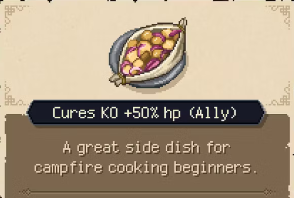

PAPILLOTE

Embark on a culinary journey with these rustic potatoes and onions, cooked to perfection in a parchment packet for a delicious campfire feast!
- 4 medium potatoes, thinly sliced
- 1 large onion, thinly sliced
- 2 cloves of garlic, minced
- 2 tablespoons olive oil
- 1 teaspoon dried thyme
- Salt and pepper to taste
- Fresh parsley for garnish
- Parchment paper
- Forage for some fresh potatoes, onions, and garlic in the wilderness.
- Build a campfire and let it burn down to hot coals.
- Slice the potatoes, onions, and garlic with your trusty adventurer's knife.
- In a parchment paper packet combine the sliced veggies with olive oil, dried thyme, salt, and pepper.
- Seal the packet tightly and place it on a flat rock near the campfire.
- Cook the papillote over the hot coals for about 30 minutes, or until the potatoes are tender.
- Open the packet carefully, inhale the delicious aroma, and garnish with wild herbs before indulging in your flavorful meal. Bon appétit, adventurer!